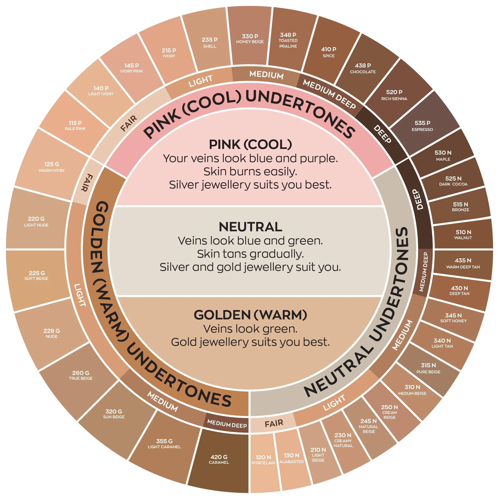
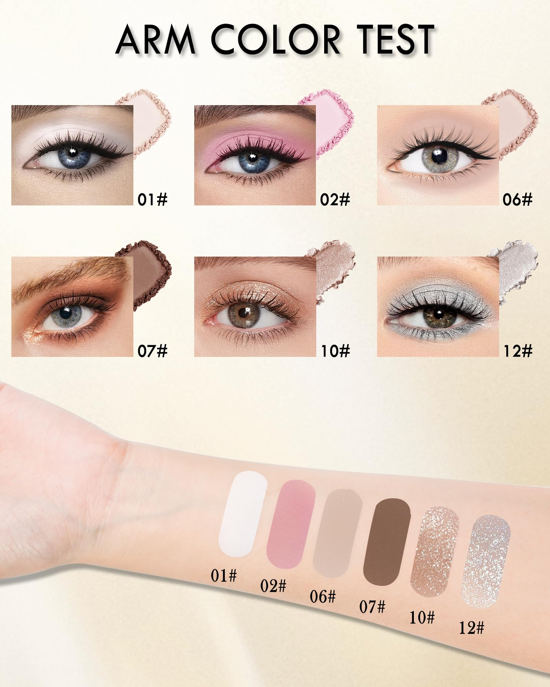
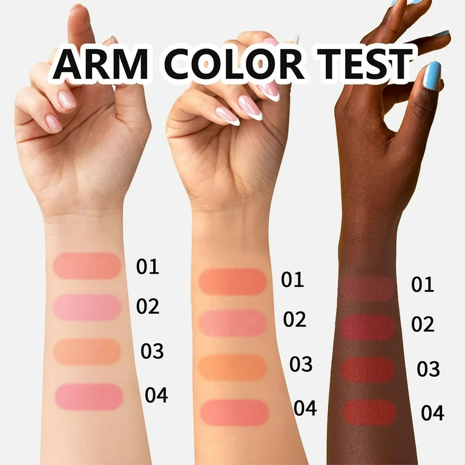

👗 Style & Fashion Tips 👗
Fashion is a powerful way of expressing yourself and creating a visual identity that aligns with how you feel inside. It's not just about following trends, it's about embracing your individuality and feeling confident in what you wear.
Understanding Your Body Shape
Before you dive into styling yourself, it's important to understand your body shape. Knowing your measurements and body type will help you choose clothes that fit and flatter your form.
There are several common body shapes, and dressing for each one can enhance your confidence:
- Apple Shape: Wider at the top, with a fuller bust and a smaller lower body. Choose clothes that balance your proportions, such as A-line skirts and dresses.
- Pear Shape: Narrower shoulders and a fuller bottom half. Try clothes that accentuate your upper body, like off-the-shoulder tops or jackets that draw attention upwards.
- Hourglass Shape: Balanced bust and hips with a smaller waist. Emphasize your curves with fitted clothing, such as tailored dresses and high-waisted pants.
- Rectangle Shape: A straighter figure with little waist definition. Create the illusion of curves with belted dresses or tops that flare out at the waist.
By understanding your body shape, you can find pieces that highlight your natural features and create a flattering silhouette.
Basic Measurements You Need
To ensure you're buying clothes that fit well, it's essential to know your measurements. Here are the basics:
- Chest/Bust: Measure around the fullest part of your chest, keeping the tape comfortably snug.
- Waist: Measure around the narrowest part of your waist.
- Hips: Measure around the fullest part of your hips and buttocks.
- Inseam: Measure from the crotch to the bottom of your ankle.
Knowing these measurements will help you find clothes that fit you properly, whether you’re shopping for shirts, pants, or dresses.
Makeup Tips for Femboys
Makeup is a great way to enhance your look and express your personality. Here's a breakdown of some key makeup techniques for beginners:
1. Foundation
Start with a light foundation to even out your skin tone. Choose a shade that matches your natural skin color. Use a beauty blender or makeup brush for smooth application.
2. Eye Makeup
Eye makeup can accentuate your eyes. Try using eyeliner to create a winged look, or experiment with different eyeshadow colors to bring out the shape and color of your eyes.
3. Blush & Highlighter
Use blush to add warmth to your cheeks, and highlighter to give your face a subtle glow. These elements can help define your face and give you a radiant look.
Clothing Recommendations
Now that you've got a better understanding of your body shape, measurements, and makeup, it's time to talk clothing! Here are a few style ideas:
- Layering: Layering can add dimension to your outfit. For example, a stylish jacket over a fitted top or a scarf around your neck can elevate your look.
- Bold Colors: Don't be afraid to experiment with color. Bright colors or pastels can complement your personality and enhance your confidence.
- Accessories: Accessories like necklaces, bracelets, and rings can make a simple outfit pop. Find pieces that speak to your style and personality.
Remember, fashion is about expressing yourself and feeling good in your own skin. Find what works best for you!
Final Thoughts
Fashion is a journey of self-discovery. Don’t rush it, take your time, experiment, and most importantly, have fun with it! Confidence comes from wearing what makes you feel amazing, so embrace your personal style!